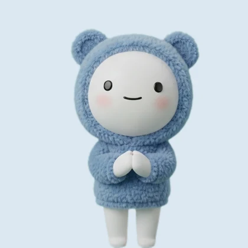
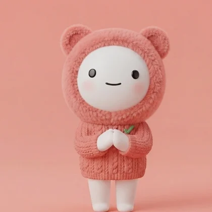
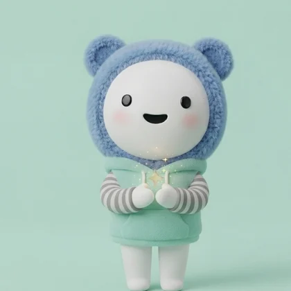
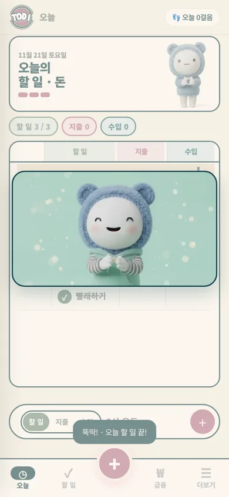

TODI · REDESIGN PROPOSAL
투디,
10가지 눈으로
다시 보기
지금 투디(오늘 홈 · 할 일 · 금융, 롤리 믹스 색, 투명 영상 캐릭터)를 그대로 두고, 디자인 프롬프트 10개를 하나씩 적용했을 때 어떻게 바뀌는지 보여드리는 시안이에요. 화면 속 버튼은 직접 눌러볼 수 있어요.





지금 투디(오늘 홈 · 할 일 · 금융, 롤리 믹스 색, 투명 영상 캐릭터)를 그대로 두고, 디자인 프롬프트 10개를 하나씩 적용했을 때 어떻게 바뀌는지 보여드리는 시안이에요. 화면 속 버튼은 직접 눌러볼 수 있어요.



지금 오늘 홈은 카드가 비슷한 크기로 줄지어 있어서 무엇이 제일 중요한지 한눈에 안 들어와요. 날짜 숫자를 포스터처럼 아주 크게, 진행 막대와 숫자 3칸으로 "오늘 얼마나 했나"가 먼저 보이게 바꿔요.
롤리 믹스 색을 OKLCH라는 방식으로 다시 적어요. 밝기 숫자가 같으면 눈에도 같은 밝기로 보여서, 밤 모드나 새 캐릭터 색을 만들 때 숫자 하나만 바꾸면 어울리는 색이 나와요. 여백·크기는 전부 4의 배수로 맞춰요.
바탕
oklch(95.6% .016 80)
카드
oklch(99% .008 80)
잉크
oklch(35% .055 210)
할 일
oklch(62% .045 155)
지출
oklch(60% .08 355)
수입
oklch(50% .06 210)
할 일 완료는 투디에서 가장 자주 하는 동작이에요. 영상이 나오기 전 0.6초를 고급스럽게 만들어요. 동그라미가 통통 차오르고 → 체크가 그려지고 → 글자에 줄이 스르륵 그어져요. 아래 줄을 눌러 보세요.
눌러서 완료 / 다시 눌러 취소
금액은 바로 바뀌는 대신 숫자가 굴러가며 바뀌고, [할 일·지출·수입] 고르기는 선택 표시가 미끄러지듯 옮겨가요. 모든 움직임은 아래 곡선 3개만 써서 앱 전체가 같은 느낌으로 움직여요.
지금 투디에 있는 움직임을 쓰기 편한가 · 투디다운가 · 폰이 버거운가 세 가지로 점검했어요.
| 움직임 | 쓰기 편함 | 투디다움 | 폰 부담 | 제안 |
|---|---|---|---|---|
| 할 일 완료 영상 (가운데 크게) | △ 매번 6초 | ◎ | △ | 같은 날 3번째부터는 줄 옆 작게, 하루 첫 완료·전부 완료만 크게 |
| 제목 카드 인사 투디 (반복) | ○ | ◎ | △ | 화면에 안 보일 때·배터리 절약 모드면 멈춤 |
| "지금" 줄 노디 (반복) | ○ | ◎ | △ | 영상 2개 동시 재생 → 하나만 움직이고 하나는 쉬게 |
| 할 일 화면 달려오는 투디 | ○ | ✕ 예전 모습 | ○ | 새 투디 영상으로 교체 또는 제거 |
| 움직임 줄이기 설정 | ✕ 없음 | - | - | 폰의 "애니메이션 줄이기"를 켠 사람은 영상 대신 사진 |
캐릭터 하나를 고르면 그 옷 색에서 배경·칩·체크 색 5단계가 자동으로 만들어져요. 사용자가 "내 투디"를 골라 앱 색을 바꿀 수 있어요. 아래 친구를 눌러 보세요.
자주 쓰는 부품 3개의 치수를 정해 두고 모든 화면에서 똑같이 써요. 지금은 화면마다 높이·둥글기가 조금씩 달라요. (피그마가 연결되어 있어서, 원하면 이 부품을 피그마 파일로도 만들어 드릴 수 있어요.)
이건 이미 클로가 하고 있는 방식이에요. 고칠 때마다 실제 크롬을 폰 크기(390×844)로 띄워 누르고 찍어서 확인해요. 앞으로는 아래 검사 목록을 매번 자동으로 돌려요.

인스타·앱스토어·제미 프롬프트 어디에 쓰든 같은 투디로 보이게 하는 한 장이에요.
노디메모 · 아이디어알미알림 · 루틴하늘
연노랑
코랄
라벤더
민트
위에서 정한 것들을 코드에 그대로 옮길 수 있는 한 장으로 정리해요. 다음 작업 때 클로가 이 표를 보고 만들기 때문에 화면마다 어긋나지 않아요.
/* 투디 디자인 토큰 v1 */ color.canvas = oklch(95.6% .016 80) color.ink = oklch(35% .055 210) color.todo = oklch(62% .045 155) color.out = oklch(60% .08 355) color.in = oklch(50% .06 210) space = 4 · 8 · 12 · 16 · 24 · 32 · 48 radius = chip 999 · row 16 · card 24 · sheet 32 motion.enter = 300ms cubic-bezier(.22,1,.36,1) motion.pop = 450ms cubic-bezier(.34,1.56,.64,1) motion.exit = 200ms ease-in /* 상태 */ Row: 기본 → 누름(scale .985) → 완료(채움+체크+줄긋기) → 취소(되돌림) 영상: 하루 첫 완료 = 크게 · 그 외 = 줄 옆 작게 · 전부 완료 = 스파키 PERFECT 접근성: 글자 대비 4.5:1 이상 · 누르는 곳 44px 이상 · 움직임 줄이기 지원